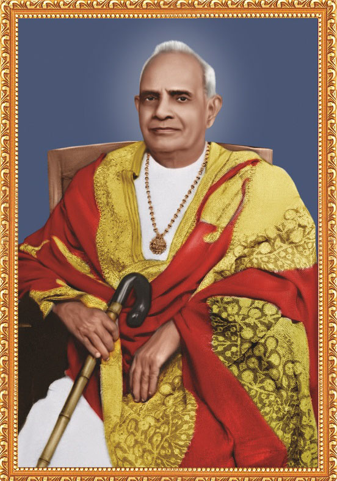
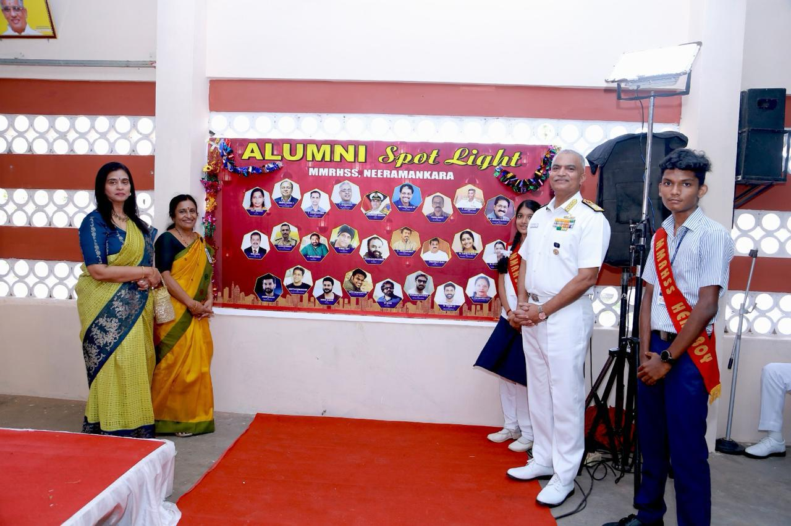
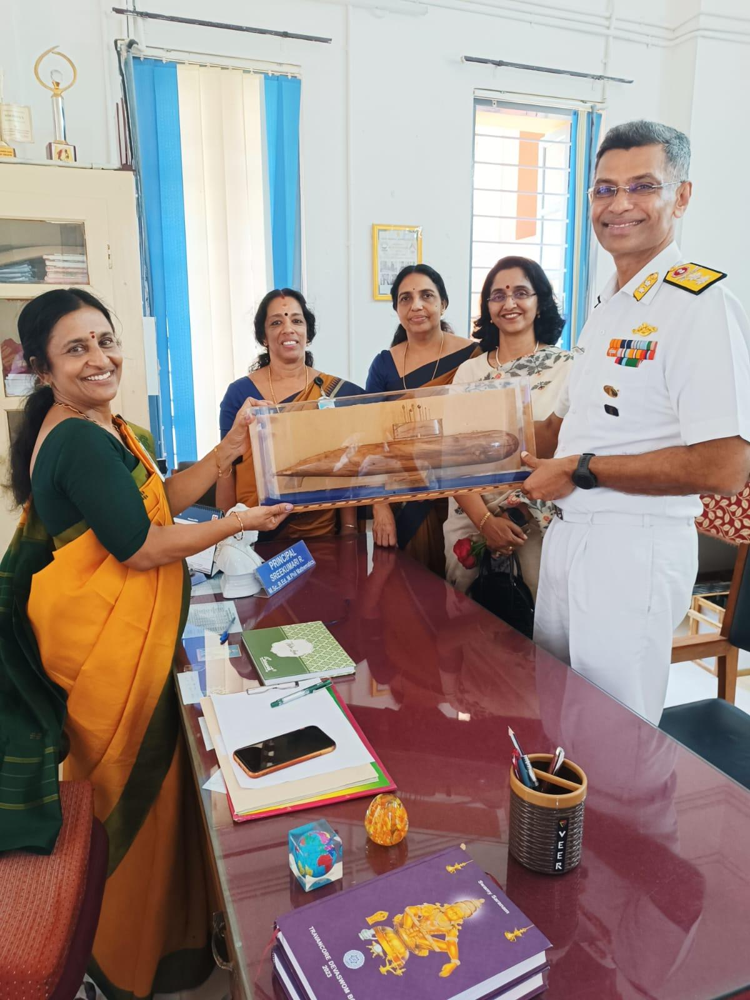
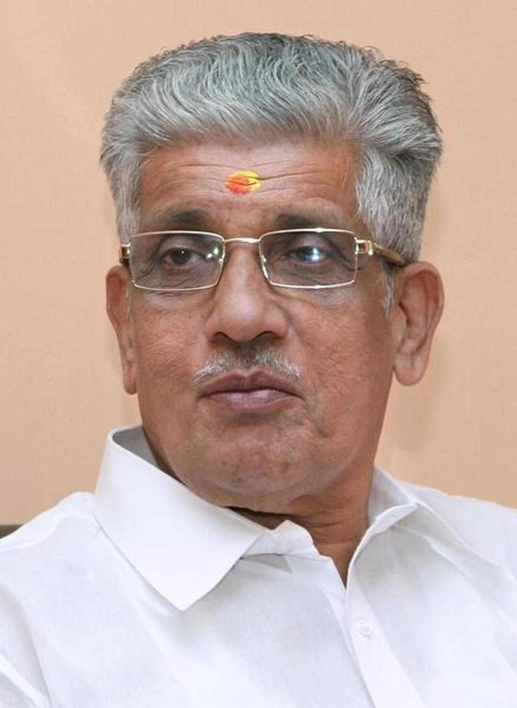
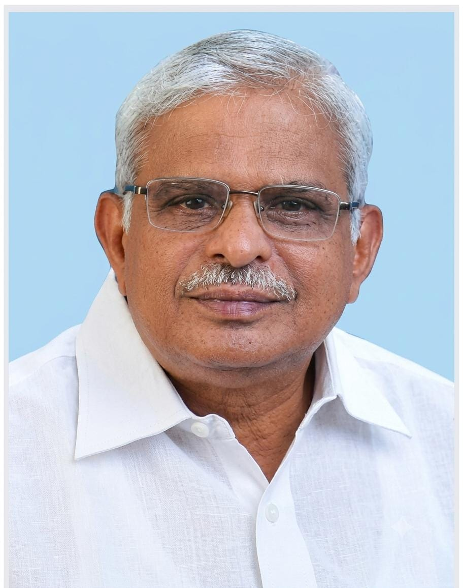
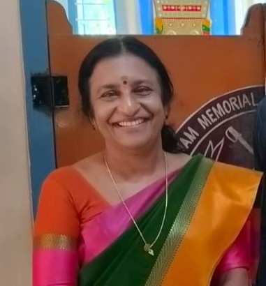

MMRHSS & Sainik School
Shaping minds, building character and nurturing future leaders.
Shaping minds, building character and nurturing future leaders.

It was the ardent desire of Bharat Kesari Mannathu Padmanabhan, founder of many educational institutions in Kerala under the Nair Service Society, to establish a residential model school in Thiruvananthapuram.
By the end of the 1960s, the people of Thiruvananthapuram were increasingly interested in providing quality English medium education to their children. To fulfil this need, the Nair Service Society decided in 1971 to establish a residential English medium school with modern facilities near NSS Women’s College, Neeramankara.
The school was named Mannam Memorial Residential High School in honour of Mannathu Padmanabhan and was dedicated to society on 13-09-1971.
With the introduction of Higher Secondary classes during 2002–03, the school was upgraded as Mannam Memorial Residential Higher Secondary School.
In 2025, the Ministry of Defence approved the conversion of MMRHSS into a new Sainik School under the Public-Private Partnership model. Today, the institution functions as MMRHSS & Sainik School, combining academic excellence with discipline, leadership and national service.
Over the years, MMRHSS has built a strong alumni community. Former students of the institution have excelled in diverse fields including defence, civil services, medicine, engineering, education, technology, business and public service.



To nurture confident, responsible and value-driven students who are prepared to contribute meaningfully to society.
To provide holistic education through strong academics, disciplined learning, leadership development and moral values.
The institution is guided by experienced leadership committed to academic excellence and discipline.

General Secretary
Manager & Inspector of NSS Schools

Sainik School Director & TVPM Taluk Union President

Principal
More than five decades of learning, growth and leadership.
Established under the aegis of Nair Service Society.
Growth in academic infrastructure and student strength.
Recognition for consistent academic performance.
Selected under the Ministry of Defence PPP model.
Preparing students to lead and serve society.